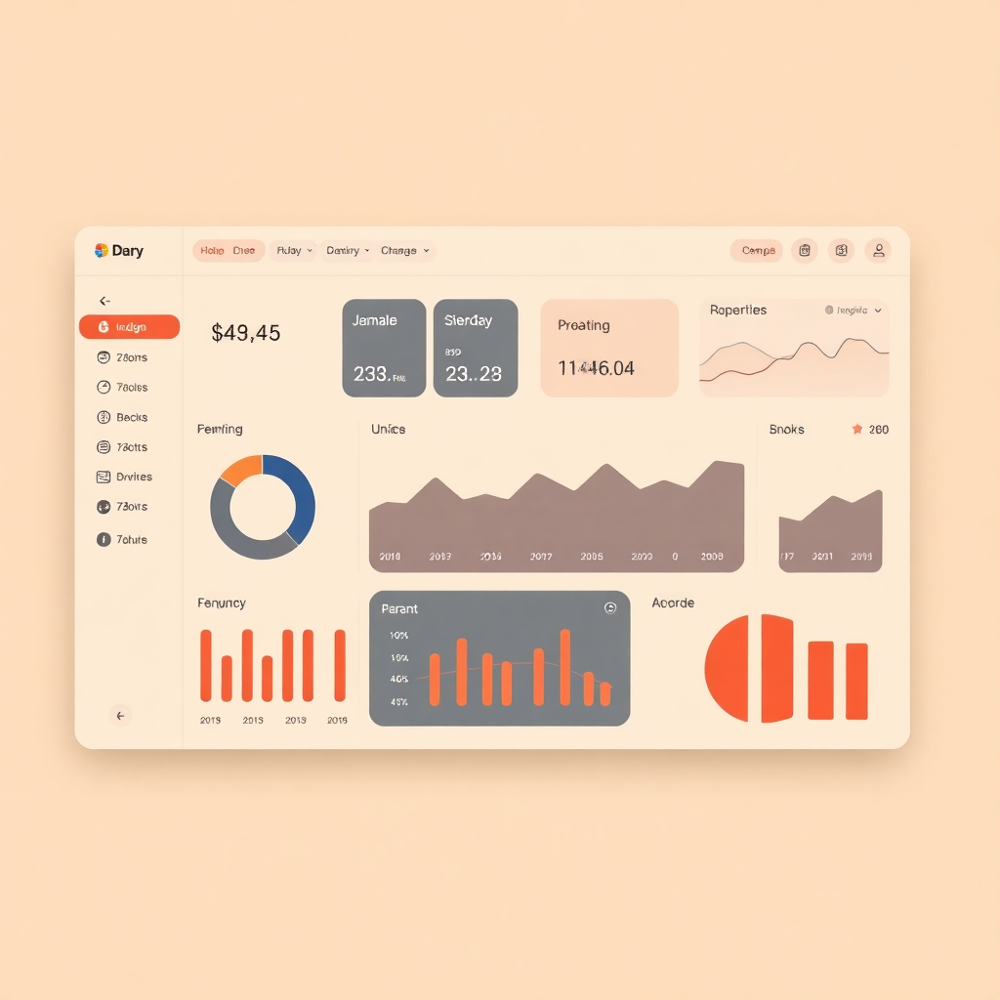

The Himotoshi Design Language for Netsuke, the build system compiler. Named for the cord that threads through a carved netsuke, connecting it to the obi sash — Himotoshi connects every surface of Netsuke's identity into a coherent whole.

Our palette is grounded in natural materials—charcoal, indigo dye, vermillion lacquer, and boxwood. These colors provide high contrast while maintaining a warm, organic feel accessible under WCAG 2.1 AA standards.
Use Matcha (#4A7C59) for success states, completions, and safe actions.
Use Amber (#C48B2C) for non-blocking alerts and attention grabbers.
Use Vermillion (#C23B22) for destructive actions, errors, and failures.
The typographic system uses a 1.25 major third scale starting from a 16px baseline. We pair the humanistic Fraunces serif with the clean utility of Source Sans 3 and JetBrains Mono.
Fraunces
Source Sans 3
JetBrains Mono
Design philosophy emphasizes warmth over sterility, precision in small spaces, visible structure, and hands-on tactile interfaces. Dark contexts provide an inverted but warm variant.
Branding notes focus on a warm, precise, and tactile personality; interfaces should feel natural and hand-influenced.
Default Size
Small Size (--sm)
Pill-shaped, monospace metadata labels.
Admonitions
This is an informational callout used for non-critical guidance.
Something went wrong with the compilation process.
Core design decisions are stored as CSS custom properties. These tokens ensure consistency across the platform and enable easy theming.
All tokens are prefixed with
--netsuke-
to avoid conflicts.
| Token Name | Value | Example | Use Case |
|---|---|---|---|
| --color-primary | #2B4162 |
|
Primary actions, links |
| --color-surface | #FAF6F0 |
|
Page background |
| --font-display | "Fraunces", serif | Aa | Headings, Hero |
| --radius-md | 6px |
|
Buttons, Inputs, Cards |
| --space-4 | 1rem (16px) | Base padding unit |